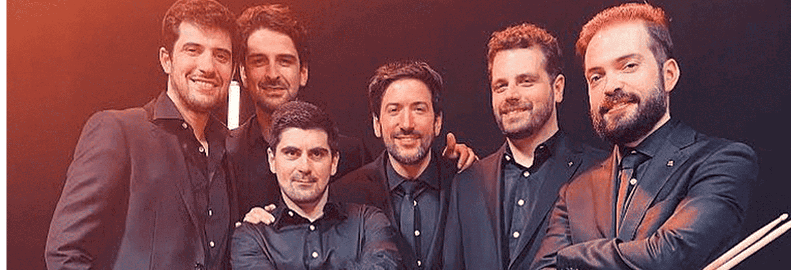
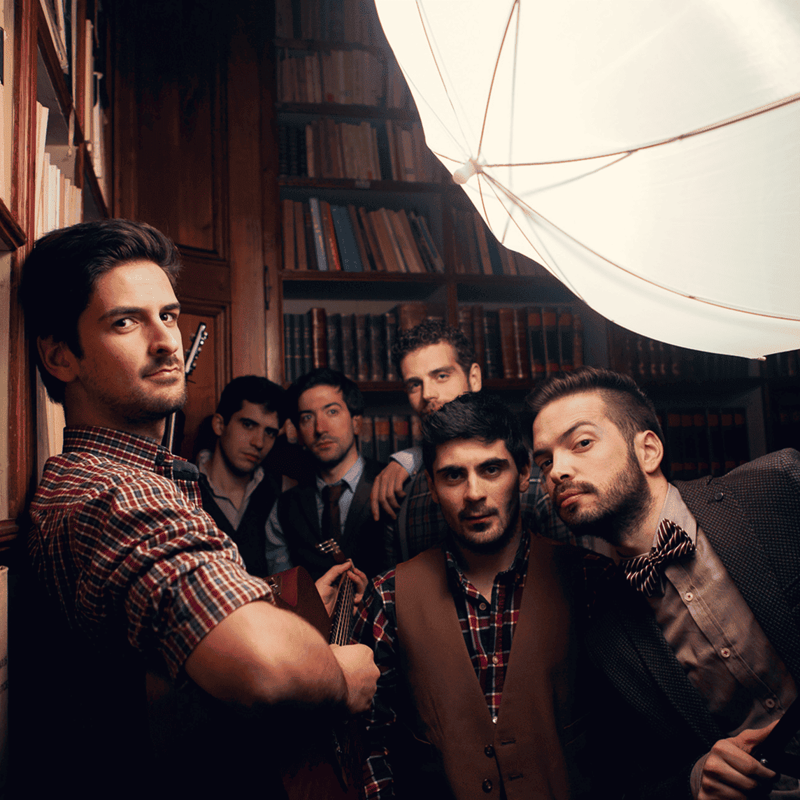

Os Quatro e Meia
13/julho


Sobre
A Banda Os Quatro e Meia é um grupo musical português formado em 2013. O seu estilo mistura pop, folk e música tradicional portuguesa. A banda surgiu em Coimbra, quando alguns dos seus membros, que eram estudantes universitários e médicos, decidiram juntar-se para um concerto. O sucesso levou-os a continuar e crescer no cenário musical português.